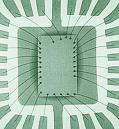
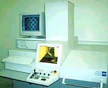

X-Ray Radiography is a nondestructive semiconductor failure analysis technique used to examine the interior details of the package. It operates on the principle of dissimilar transmission of X-Rays through different materials. The ability of a material to block X-Rays increases with its density. This property creates an image of various contrasts.
X-Ray imaging may be accomplished on film, by fluoroscopy, or using image intensifying video systems.

Modern X-Ray inspection equipment excites a target into producing X-Rays. These X-Rays pass through the specimen, and a detector translates them into an image. Different materials block varying amounts of X-Rays, resulting in grayscale images.

Today, X-Ray systems use a microspot source and automated sample manipulation to detect finer package details.